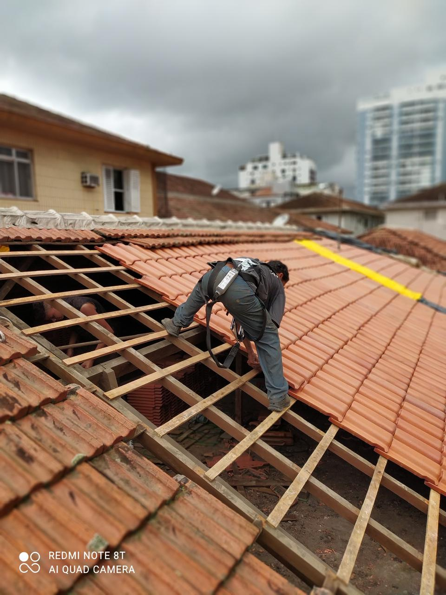

Paredes com umidade
Remoção das partes deterioradas, preparação e tratamento conforme a situação encontrada.
Serviços de impermeabilização em Santos para paredes, calhas, telhados e outras áreas expostas à água e umidade, com avaliação da origem do problema antes da definição do reparo.

SERVIÇO REAL
Atendimento em Santos e região.
Remoção das partes deterioradas, preparação e tratamento conforme a situação encontrada.
Manutenção e correções em pontos da cobertura relacionados à entrada de água.
Limpeza, reparos e impermeabilização quando adequados ao problema identificado.
Tratamento de superfícies sujeitas à chuva e intempéries.
Quando previsto no serviço, recuperação da superfície e acabamento após o tratamento.
A solução é definida depois de analisar a área e a possível origem da infiltração.